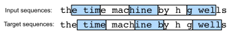

Mô hình Ngôn ngữ¶
Trong sec_text-sequence, chúng ta đã thấy cách ánh xạ các chuỗi văn bản thành các token, trong đó các token này có thể được xem như một chuỗi các quan sát rời rạc như các từ hoặc ký tự. Giả sử rằng các token trong một chuỗi văn bản có độ dài \(T\) lần lượt là \(x_1, x_2, \ldots, x_T\). Mục tiêu của mô hình ngôn ngữ là ước tính xác suất kết hợp của toàn bộ chuỗi:
trong đó các công cụ thống kê trong sec_sequence có thể được áp dụng.
Mô hình ngôn ngữ cực kỳ hữu ích. Ví dụ, một mô hình ngôn ngữ lý tưởng nên tự tạo văn bản tự nhiên, đơn giản bằng cách lấy mẫu một token tại một thời điểm \(x_t \sim P(x_t \mid x_{t-1}, \ldots, x_1)\). Hoàn toàn khác với một con khỉ dùng máy đánh chữ, tất cả văn bản xuất phát từ một mô hình như vậy sẽ được xem là ngôn ngữ tự nhiên, ví dụ văn bản tiếng Anh. Hơn nữa, điều đó sẽ đủ để tạo ra một cuộc hội thoại có ý nghĩa, chỉ đơn giản bằng cách điều kiện hóa văn bản trên các đoạn hội thoại trước đó. Rõ ràng chúng ta vẫn còn rất xa mới thiết kế được một hệ thống như vậy, vì nó sẽ cần hiểu văn bản thay vì chỉ tạo ra nội dung có nghĩa ngữ pháp.
Tuy nhiên, mô hình ngôn ngữ vẫn rất hữu ích ngay cả ở dạng hạn chế của chúng. Ví dụ, các cụm từ "to recognize speech" (nhận dạng giọng nói) và "to wreck a nice beach" (phá hủy một bãi biển đẹp) nghe rất giống nhau. Điều này có thể gây ra sự mơ hồ trong nhận dạng giọng nói, được giải quyết dễ dàng thông qua một mô hình ngôn ngữ từ chối bản dịch thứ hai là phi lý. Tương tự, trong một thuật toán tóm tắt tài liệu điều đáng biết là "dog bites man" (chó cắn người) thường xuyên hơn nhiều so với "man bites dog" (người cắn chó), hoặc "I want to eat grandma" (Tôi muốn ăn bà) là một câu khá đáng lo ngại, trong khi "I want to eat, grandma" (Tôi muốn ăn, bà ơi) thì lành mạnh hơn nhiều.
Học Mô hình Ngôn ngữ¶
Câu hỏi hiển nhiên là chúng ta nên mô hình hóa một tài liệu, hoặc thậm chí một chuỗi token, như thế nào. Giả sử rằng chúng ta token hóa dữ liệu văn bản ở cấp độ từ. Hãy bắt đầu bằng cách áp dụng các quy tắc xác suất cơ bản:
Ví dụ, xác suất của một chuỗi văn bản chứa bốn từ sẽ được cho như sau:
Mô hình Markov và \(n\)-gram¶
Trong số các phân tích mô hình chuỗi trong sec_sequence, hãy áp dụng mô hình Markov cho mô hình hóa ngôn ngữ. Một phân phối trên các chuỗi thỏa mãn tính chất Markov bậc một nếu \(P(x_{t+1} \mid x_t, \ldots, x_1) = P(x_{t+1} \mid x_t)\). Các bậc cao hơn tương ứng với các phụ thuộc dài hơn. Điều này dẫn đến một số xấp xỉ mà chúng ta có thể áp dụng để mô hình hóa một chuỗi:
Các công thức xác suất liên quan đến một, hai và ba biến thường được gọi là các mô hình unigram, bigram, và trigram tương ứng. Để tính toán mô hình ngôn ngữ, chúng ta cần tính toán xác suất của các từ và xác suất có điều kiện của một từ khi có một vài từ trước đó. Lưu ý rằng các xác suất như vậy là các tham số của mô hình ngôn ngữ.
Tần suất Từ¶
Ở đây, chúng ta giả định rằng tập dữ liệu huấn luyện là một kho ngữ liệu văn bản lớn, chẳng hạn như tất cả các mục Wikipedia, Project Gutenberg, và tất cả văn bản được đăng lên web. Xác suất của các từ có thể được tính toán từ tần suất từ tương đối của một từ nhất định trong tập dữ liệu huấn luyện. Ví dụ, ước tính \(\hat{P}(\textrm{deep})\) có thể được tính toán là xác suất của bất kỳ câu nào bắt đầu bằng từ "deep". Một cách tiếp cận kém chính xác hơn một chút là đếm tất cả các lần xuất hiện của từ "deep" và chia cho tổng số từ trong kho ngữ liệu. Cách này hoạt động khá tốt, đặc biệt đối với các từ thường xuyên. Tiếp tục, chúng ta có thể cố gắng ước tính
trong đó \(n(x)\) và \(n(x, x')\) là số lần xuất hiện của các từ đơn lẻ và các cặp từ liên tiếp tương ứng. Thật không may, việc ước tính xác suất của một cặp từ khó hơn một chút, vì các lần xuất hiện của "deep learning" ít thường xuyên hơn nhiều. Cụ thể, đối với một số tổ hợp từ bất thường, có thể khó tìm đủ số lần xuất hiện để có được các ước tính chính xác. Như được gợi ý bởi các kết quả thực nghiệm trong subsec_natural-lang-stat, tình hình trở nên xấu hơn đối với các tổ hợp ba từ và hơn nữa. Sẽ có nhiều tổ hợp ba từ hợp lý mà chúng ta có thể sẽ không thấy trong tập dữ liệu. Trừ khi chúng ta cung cấp một số giải pháp để gán cho các tổ hợp từ như vậy một số đếm khác không, chúng ta sẽ không thể sử dụng chúng trong một mô hình ngôn ngữ. Nếu tập dữ liệu nhỏ hoặc nếu các từ rất hiếm, chúng ta thậm chí có thể không tìm thấy một cái nào.
Làm mượt Laplace¶
Một chiến lược phổ biến là thực hiện một số dạng làm mượt Laplace. Giải pháp là thêm một hằng số nhỏ vào tất cả các số đếm. Ký hiệu \(n\) là tổng số từ trong tập huấn luyện và \(m\) là số từ duy nhất. Giải pháp này giúp ích với các từ đơn lẻ, ví dụ:
Ở đây \(\epsilon_1,\epsilon_2\) và \(\epsilon_3\) là các siêu tham số. Lấy \(\epsilon_1\) làm ví dụ: khi \(\epsilon_1 = 0\), không áp dụng làm mượt; khi \(\epsilon_1\) tiến đến vô cực dương, \(\hat{P}(x)\) tiến đến xác suất đều \(1/m\). Trên đây là một biến thể khá nguyên thủy của những gì các kỹ thuật khác có thể thực hiện [Wood.Gasthaus.Archambeau.ea.2011].
Thật không may, các mô hình như thế này trở nên cồng kềnh khá nhanh vì những lý do sau. Thứ nhất, như đã thảo luận trong subsec_natural-lang-stat, nhiều \(n\)-gram xuất hiện rất hiếm, khiến làm mượt Laplace khá không phù hợp cho mô hình hóa ngôn ngữ. Thứ hai, chúng ta cần lưu trữ tất cả các số đếm. Thứ ba, điều này hoàn toàn bỏ qua ý nghĩa của các từ. Ví dụ, "cat" (mèo) và "feline" (thuộc họ mèo) nên xuất hiện trong các ngữ cảnh liên quan. Khá khó để điều chỉnh các mô hình như vậy cho các ngữ cảnh bổ sung, trong khi các mô hình ngôn ngữ dựa trên deep learning rất phù hợp để tính đến điều này. Cuối cùng, các chuỗi từ dài gần như chắc chắn là mới, do đó một mô hình chỉ đơn giản đếm tần suất của các chuỗi từ đã thấy trước đó chắc chắn sẽ hoạt động kém ở đó. Do đó, chúng ta tập trung vào việc sử dụng mạng nơ-ron cho mô hình hóa ngôn ngữ trong phần còn lại của chương.
Độ Rối rắm (Perplexity)¶
Tiếp theo, hãy thảo luận về cách đo chất lượng của mô hình ngôn ngữ, mà chúng ta sau đó sẽ sử dụng để đánh giá các mô hình của mình trong các phần tiếp theo. Một cách là kiểm tra văn bản ngạc nhiên đến mức nào. Một mô hình ngôn ngữ tốt có thể dự đoán, với độ chính xác cao, các token đến tiếp theo. Hãy xem xét các phần tiếp theo của cụm từ "It is raining" (Trời đang mưa), như được đề xuất bởi các mô hình ngôn ngữ khác nhau:
- "It is raining outside" (Trời đang mưa ngoài trời)
- "It is raining banana tree" (Trời đang mưa cây chuối)
- "It is raining piouw;kcj pwepoiut"
Về mặt chất lượng, Ví dụ 1 rõ ràng là tốt nhất. Các từ hợp lý và logic mạch lạc. Mặc dù nó có thể không phản ánh chính xác từ nào đến tiếp theo theo nghĩa ngữ nghĩa ("in San Francisco" và "in winter" sẽ là các phần mở rộng hoàn toàn hợp lý), mô hình có thể nắm bắt loại từ nào đến tiếp theo. Ví dụ 2 tệ hơn đáng kể bằng cách tạo ra phần mở rộng vô nghĩa. Tuy nhiên, ít nhất mô hình đã học cách đánh vần từ và một mức độ tương quan nhất định giữa các từ. Cuối cùng, Ví dụ 3 chỉ ra một mô hình được huấn luyện kém mà không khớp dữ liệu đúng cách.
Chúng ta có thể đo chất lượng của mô hình bằng cách tính xác suất của chuỗi. Thật không may, đây là một con số khó hiểu và khó so sánh. Dù sao, các chuỗi ngắn hơn có khả năng xảy ra cao hơn nhiều so với các chuỗi dài hơn, do đó đánh giá mô hình trên tác phẩm vĩ đại của Tolstoy War and Peace chắc chắn sẽ tạo ra xác suất nhỏ hơn nhiều so với, chẳng hạn, trên tiểu thuyết của Saint-Exupery The Little Prince. Điều còn thiếu là tương đương với một giá trị trung bình.
Lý thuyết thông tin rất hữu ích ở đây. Chúng ta đã định nghĩa entropy, surprisal, và entropy chéo khi chúng ta giới thiệu hồi quy softmax (subsec_info_theory_basics). Nếu chúng ta muốn nén văn bản, chúng ta có thể hỏi về việc dự đoán token tiếp theo khi có tập hợp token hiện tại. Một mô hình ngôn ngữ tốt hơn nên cho phép chúng ta dự đoán token tiếp theo chính xác hơn. Do đó, nó nên cho phép chúng ta dùng ít bit hơn để nén chuỗi. Vì vậy, chúng ta có thể đo bằng mất mát entropy chéo trung bình trên tất cả \(n\) token của chuỗi:
trong đó \(P\) được cho bởi một mô hình ngôn ngữ và \(x_t\) là token thực tế quan sát được tại bước thời gian \(t\) từ chuỗi.
Điều này làm cho hiệu suất trên các tài liệu có độ dài khác nhau có thể so sánh được. Vì lý do lịch sử, các nhà khoa học trong xử lý ngôn ngữ tự nhiên thích sử dụng một đại lượng gọi là độ rối rắm (perplexity). Tóm lại, đó là số mũ của :eqref:eq_avg_ce_for_lm:
Perplexity có thể được hiểu tốt nhất là nghịch đảo của trung bình nhân hình học của số lựa chọn thực sự mà chúng ta có khi quyết định token nào sẽ chọn tiếp theo. Hãy xem xét một số trường hợp:
- Trong trường hợp tốt nhất, mô hình luôn ước tính hoàn hảo xác suất của token mục tiêu là 1. Trong trường hợp này perplexity của mô hình là 1.
- Trong trường hợp xấu nhất, mô hình luôn dự đoán xác suất của token mục tiêu là 0. Trong tình huống này, perplexity là dương vô cực.
- Tại mức cơ sở, mô hình dự đoán phân phối đều trên tất cả các token có sẵn của từ vựng. Trong trường hợp này, perplexity bằng số token duy nhất của từ vựng. Thực ra, nếu chúng ta lưu trữ chuỗi mà không nén bất kỳ, đây sẽ là điều tốt nhất chúng ta có thể làm để mã hóa nó. Do đó, điều này cung cấp một giới hạn trên phi tầm thường mà bất kỳ mô hình hữu ích nào phải vượt qua.
Phân vùng Chuỗi¶
Chúng ta sẽ thiết kế mô hình ngôn ngữ bằng cách sử dụng mạng nơ-ron và sử dụng perplexity để đánh giá mức độ tốt của mô hình trong việc dự đoán token tiếp theo khi có tập hợp token hiện tại trong các chuỗi văn bản. Trước khi giới thiệu mô hình, hãy giả định rằng nó xử lý một minibatch các chuỗi với độ dài được định nghĩa trước mỗi lần. Bây giờ câu hỏi là làm thế nào để [đọc các minibatch chuỗi đầu vào và chuỗi mục tiêu một cách ngẫu nhiên].
Giả sử rằng tập dữ liệu có dạng một chuỗi \(T\) chỉ số token trong corpus.
Chúng ta sẽ
phân vùng nó
thành các chuỗi con, trong đó mỗi chuỗi con có \(n\) token (bước thời gian).
Để lặp lại
(gần như) tất cả các token của toàn bộ tập dữ liệu
cho mỗi epoch
và thu được tất cả các chuỗi con có độ dài \(n\) có thể,
chúng ta có thể giới thiệu tính ngẫu nhiên.
Cụ thể hơn,
vào đầu mỗi epoch,
loại bỏ \(d\) token đầu tiên,
trong đó \(d\in [0,n)\) được lấy mẫu ngẫu nhiên đều.
Phần còn lại của chuỗi
sau đó được phân vùng
thành \(m=\lfloor (T-d)/n \rfloor\) chuỗi con.
Ký hiệu \(\mathbf x_t = [x_t, \ldots, x_{t+n-1}]\) là chuỗi con có độ dài \(n\) bắt đầu từ token \(x_t\) tại bước thời gian \(t\).
\(m\) chuỗi con được phân vùng kết quả là
\(\mathbf x_d, \mathbf x_{d+n}, \ldots, \mathbf x_{d+n(m-1)}.\)
Mỗi chuỗi con sẽ được sử dụng làm chuỗi đầu vào cho mô hình ngôn ngữ.
Đối với mô hình hóa ngôn ngữ, mục tiêu là dự đoán token tiếp theo dựa trên các token chúng ta đã thấy cho đến nay; do đó các mục tiêu (nhãn) là chuỗi gốc, được dịch chuyển một token. Chuỗi mục tiêu cho bất kỳ chuỗi đầu vào \(\mathbf x_t\) là \(\mathbf x_{t+1}\) với độ dài \(n\).

fig_lang_model_data cho thấy một ví dụ về việc thu được năm cặp chuỗi đầu vào và chuỗi mục tiêu với \(n=5\) và \(d=2\).
@d2l.add_to_class(d2l.TimeMachine)
def __init__(self, batch_size, num_steps, num_train=10000, num_val=5000):
super(d2l.TimeMachine, self).__init__()
self.save_hyperparameters()
corpus, self.vocab = self.build(self._download())
array = d2l.tensor([corpus[i:i+num_steps+1]
for i in range(len(corpus)-num_steps)])
self.X, self.Y = array[:,:-1], array[:,1:]
Để huấn luyện mô hình ngôn ngữ,
chúng ta sẽ lấy mẫu ngẫu nhiên
các cặp chuỗi đầu vào và chuỗi mục tiêu
trong các minibatch.
Bộ tải dữ liệu sau đây tạo ngẫu nhiên một minibatch từ tập dữ liệu mỗi lần.
Đối số batch_size chỉ định số ví dụ chuỗi con trong mỗi minibatch
và num_steps là độ dài chuỗi con tính bằng token.
@d2l.add_to_class(d2l.TimeMachine)
def get_dataloader(self, train):
idx = slice(0, self.num_train) if train else slice(
self.num_train, self.num_train + self.num_val)
return self.get_tensorloader([self.X, self.Y], train, idx)
Như chúng ta có thể thấy ở phần sau, một minibatch các chuỗi mục tiêu có thể được thu được bằng cách dịch chuyển các chuỗi đầu vào đi một token.
data = d2l.TimeMachine(batch_size=2, num_steps=10)
for X, Y in data.train_dataloader():
print('X:', X, '\nY:', Y)
break
Tóm tắt và Thảo luận¶
Mô hình ngôn ngữ ước tính xác suất kết hợp của một chuỗi văn bản. Đối với các chuỗi dài, \(n\)-gram cung cấp một mô hình tiện lợi bằng cách cắt ngắn sự phụ thuộc. Tuy nhiên, có rất nhiều cấu trúc nhưng không đủ tần suất để xử lý hiệu quả các tổ hợp từ hiếm gặp thông qua làm mượt Laplace. Do đó, chúng ta sẽ tập trung vào mô hình ngôn ngữ nơ-ron trong các phần tiếp theo. Để huấn luyện mô hình ngôn ngữ, chúng ta có thể lấy mẫu ngẫu nhiên các cặp chuỗi đầu vào và chuỗi mục tiêu trong các minibatch. Sau khi huấn luyện, chúng ta sẽ sử dụng perplexity để đo chất lượng mô hình ngôn ngữ.
Mô hình ngôn ngữ có thể được mở rộng quy mô với kích thước dữ liệu tăng lên, kích thước mô hình, và lượng tính toán huấn luyện. Các mô hình ngôn ngữ lớn có thể thực hiện các nhiệm vụ mong muốn bằng cách dự đoán văn bản đầu ra khi có các hướng dẫn văn bản đầu vào. Như chúng ta sẽ thảo luận sau (ví dụ sec_large-pretraining-transformers), vào thời điểm hiện tại các mô hình ngôn ngữ lớn tạo thành nền tảng của các hệ thống hiện đại nhất trên các nhiệm vụ đa dạng.
Bài tập¶
- Giả sử có 100.000 từ trong tập dữ liệu huấn luyện. Một four-gram cần lưu trữ bao nhiêu tần suất từ và tần suất từ liền kề đa từ?
- Bạn sẽ mô hình hóa một cuộc hội thoại như thế nào?
- Bạn có thể nghĩ đến những phương pháp nào khác để đọc dữ liệu chuỗi dài?
- Hãy xem xét phương pháp của chúng ta để loại bỏ một số lượng ngẫu nhiên đều của một vài token đầu tiên ở đầu mỗi epoch.
- Nó có thực sự dẫn đến phân phối hoàn toàn đều trên các chuỗi trong tài liệu không?
- Bạn phải làm gì để mọi thứ trở nên đều hơn?
- Nếu chúng ta muốn một ví dụ chuỗi là một câu hoàn chỉnh, điều này giới thiệu vấn đề gì trong lấy mẫu minibatch? Làm thế nào chúng ta có thể khắc phục nó?